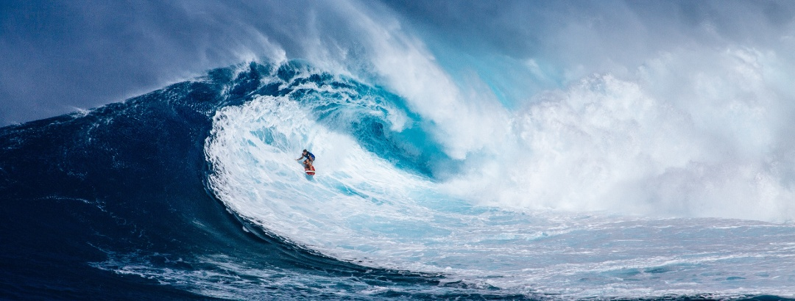
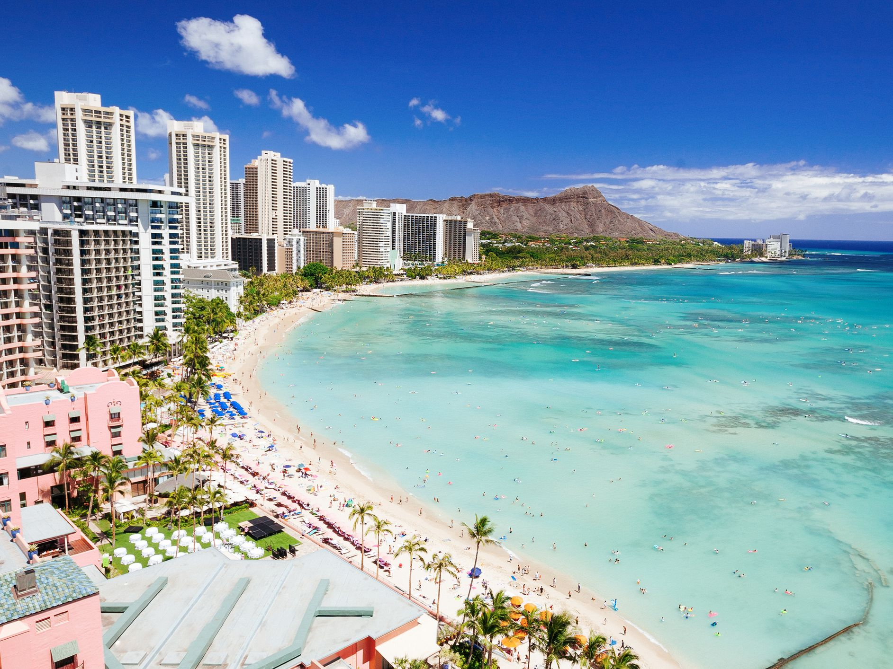
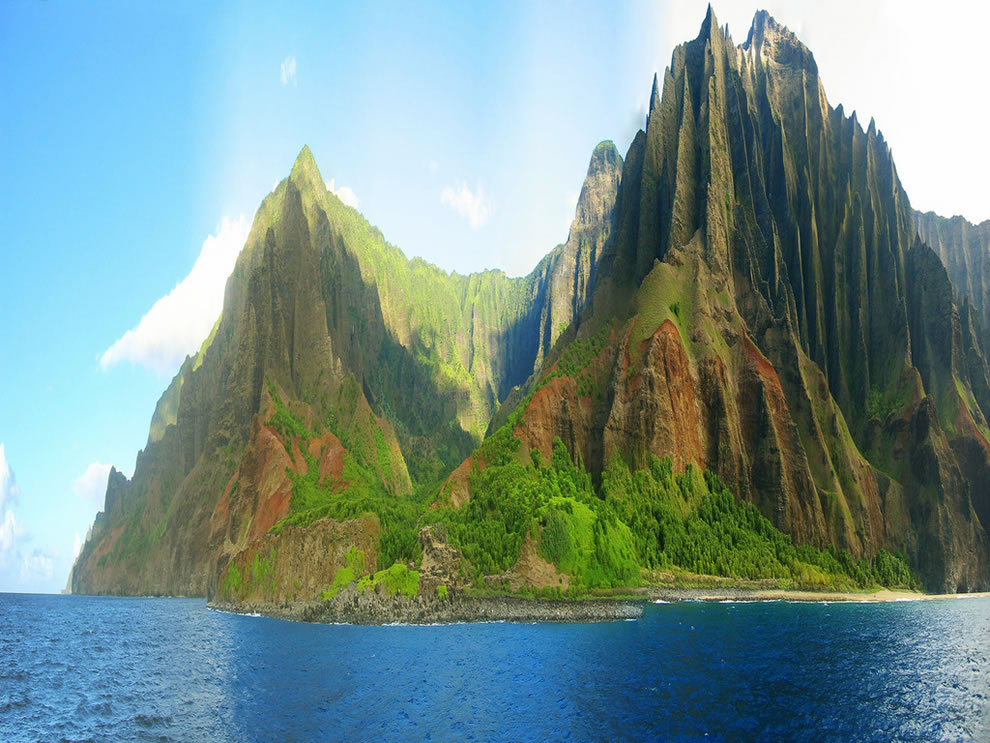
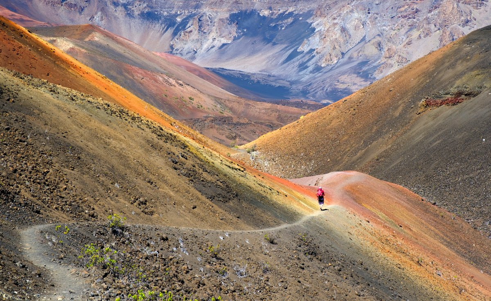
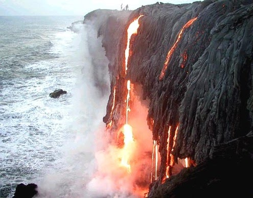
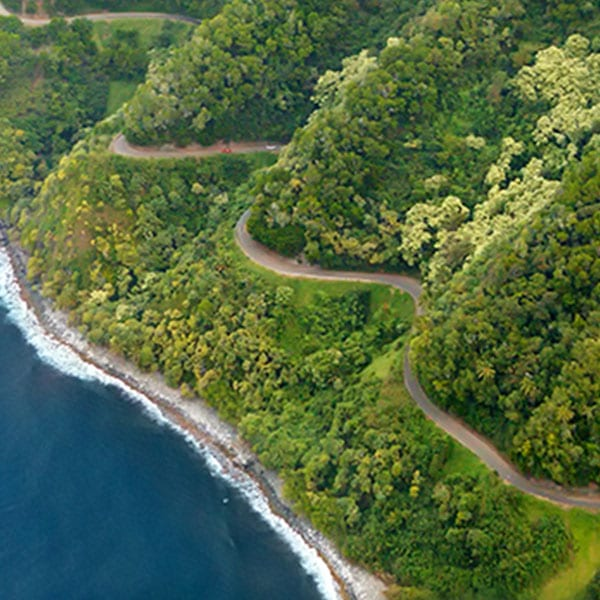

(Hawaiian: Hawaiʻi, sometimes pronounced ha-VAI-ee by locals) is the 50th state of the United States of America. Situated nearly at the center of the north Pacific Ocean, Hawaii marks the northeast corner of Polynesia. While it was once a major hub for the whaling, sugar, and pineapple industries, it is now economically dependent on tourism and the U.S. military. The natural beauty of the islands continues to be one of Hawaii's greatest assets. Honolulu is the state's capital, largest city, and cultural hub. Hawaiian and English are the official languages of Hawaii.
Waikiki Beach

The name Waikiki, in essence, means “spouting waters,” and refers to the freshwater rivers that once flowed towards the ocean. In ancient times, the coastal area of Waikiki in South Oahu once encompassed a larger area, including Manoa and Palolo Valleys. During the 1450s, Waikiki was designated as the first government center in all of Hawaii.
Indeed, there’s a host of reasons why Waikiki is one of the top places to visit in Hawaii!
Na Pali Coast State Wilderness Park

The Na Pali Coastline on Kauai is without a doubt one of the most beautiful places on earth. This coastal region isn’t just one of the best places to visit in Hawaii, but it is also super rich in Hawaiian cultural history. This area was home to Hawaiian Ali’i (royalty) and known for its lavishly flowing waterfalls and freshwater rivers, an abundance of Hawaiian flora and fauna, and an excess supply of natural food sources from valley to sea; taro, sweet potatoes, breadfruit, fresh fish and more. Since the Na Pali Coastline is only reached by foot or ocean vessel, it has remained somewhat isolated.
Haleakala National Park

Visit the magical Island of Maui, and feel the power of the 10,023-ft dormant Mt. Haleakala all around you! When on the Valley Isle, visitors must seek out an adventure to Haleakala for a sunrise or a sunset, guided activities, hiking and camping trips. When visiting Haleakala for sunrise or sunset, plan for at least a 1-1/2 hour drive from Central Maui (Kahului) to the summit.
This is a ‘must-do’ activity on Maui. Without a doubt, and after witnessing the jaw-dropping scenery, all will instantly understand why Haleakala, ‘The House of the Sun,’ is one of the top places to visit in Hawaii.
Hawai’i Volcanoes National Park

Experience ‘Old Hawai’i’ while venturing to the Big Island’s powerful volcanic landscape. Witness ‘her’ ecological dominance firsthand. Since 1916, the Big Island’s Hawai’i Volcanoes National Park has been the place to go for those who’d like to learn more about how the Hawaiian Islands were formed through a fascinating and eruptive timeline of events. Without a doubt, this is one of the most sought after places to visit in Hawaii.
Hana Road

The dramatic Hana Road, officially named Hana Highway, is a scenic 52-mile stretch of highway on the island of Maui that winds from Pāia through lush forests and along the coast to the remote town of Hana. This trip is worthwhile for the sightseeing along the stunning drive, the things to do along the way, and the visit to the town itself. Attractions along the route include numerous hiking trails, waterfalls, scenic overlooks, and beaches.
Hana's location, relatively cut off from the rest of the island, has allowed it to maintain more of a traditional Hawaiian culture than other towns.